← Back to ACTA in Action
SEPTEMBER 13, 2026
Joint Orientation & Installation
New members from the Liloan, Compostela and Danao chapters were formally oriented and installed, joined by roughly 50–60 members of the CGBAPI Guardians as police force multipliers. The orientation was led by ACTA Founder Gov. Benjamin Maceren together with chapter officers Chary Cañete, Cedric Cañete, Migz Gubahac and Boo Oncada — with the group soon to be recognized as City Accredited Force Multipliers of Liloan LGU.
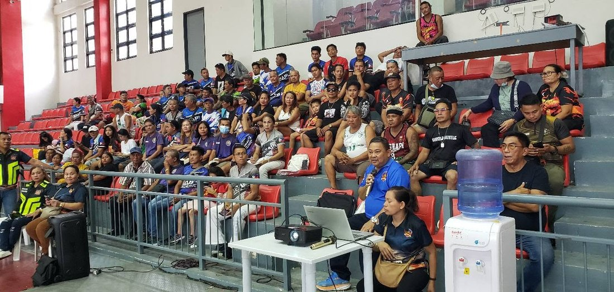
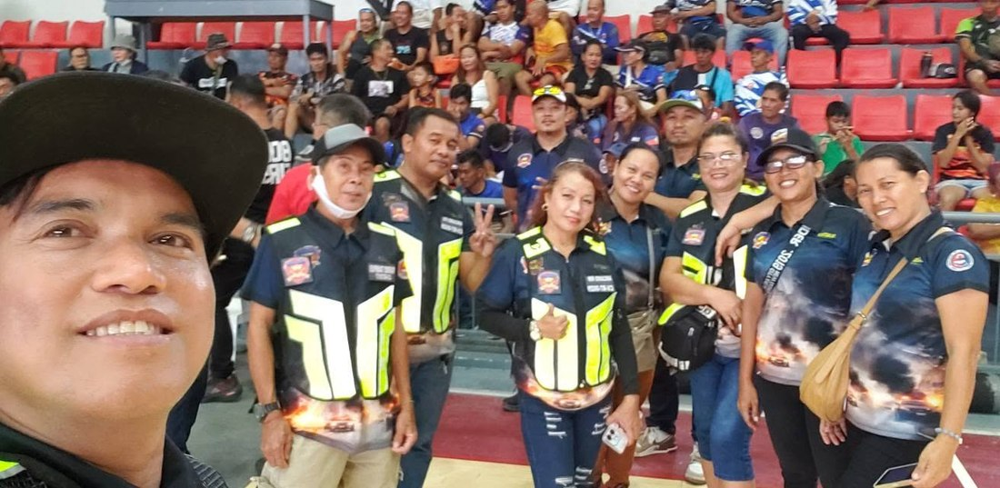
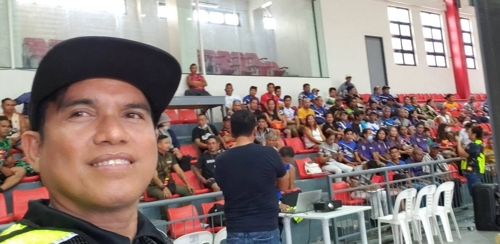
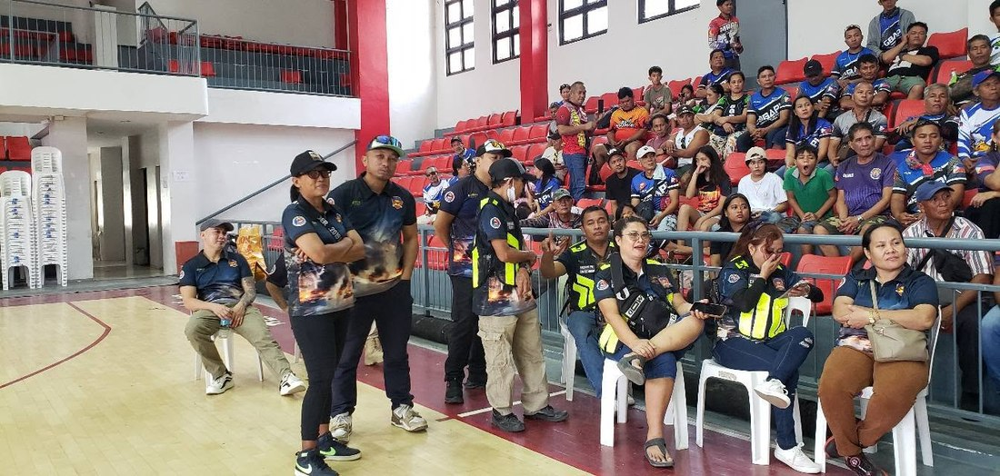
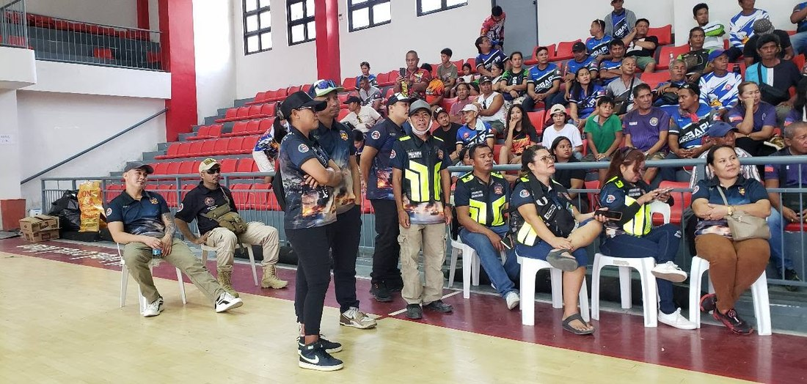
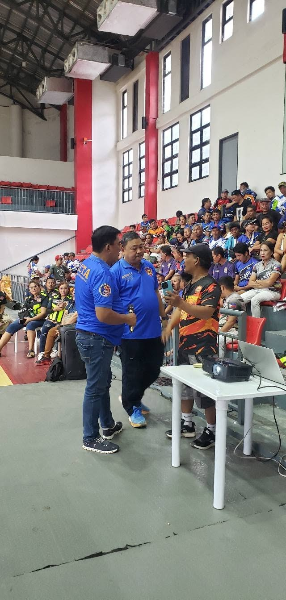
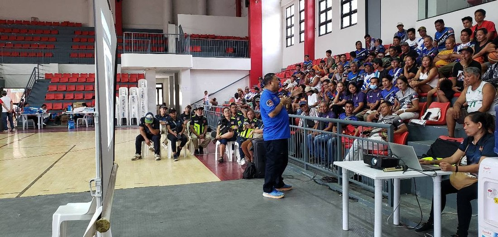
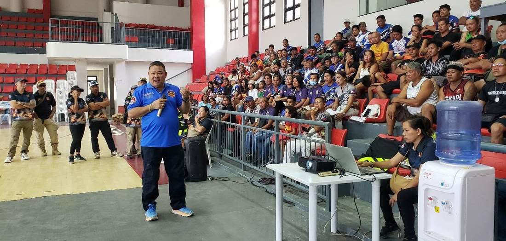
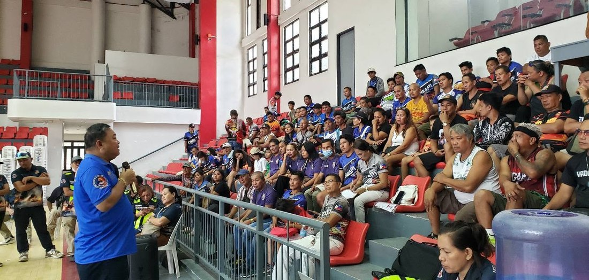
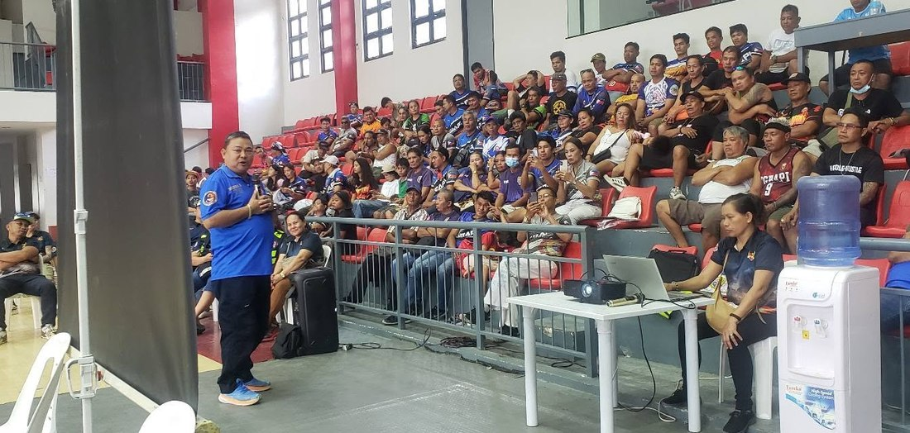
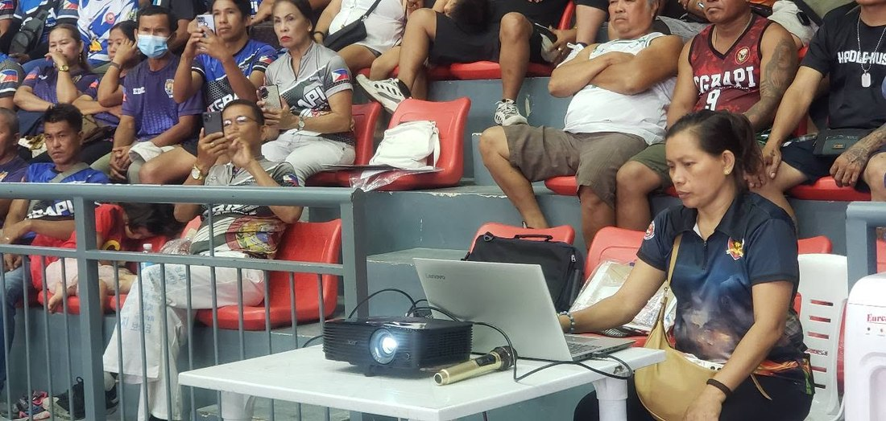
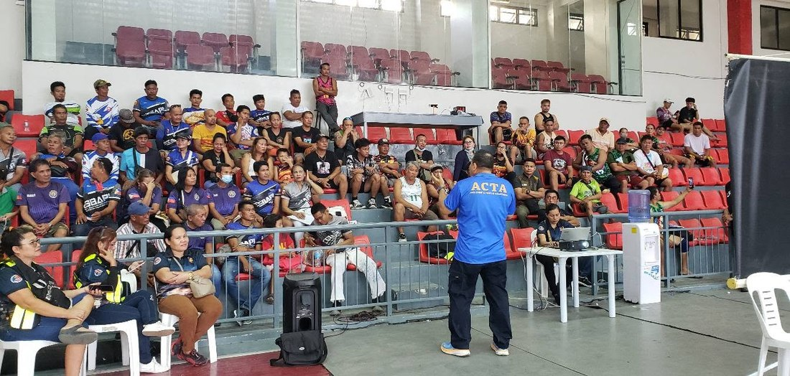
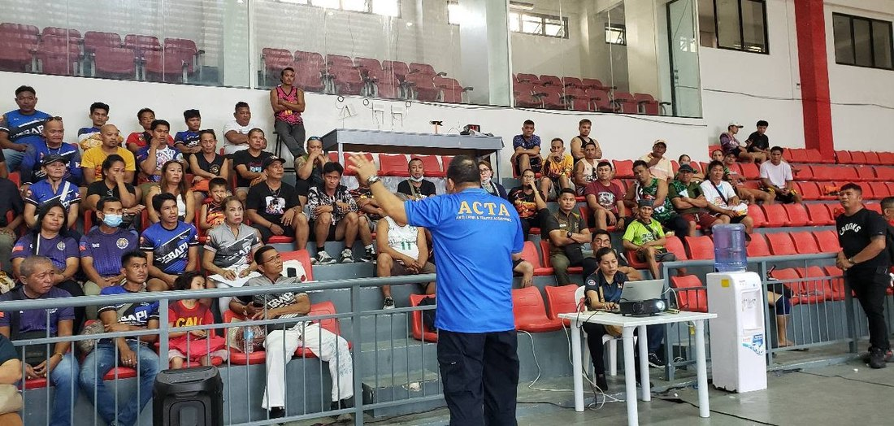
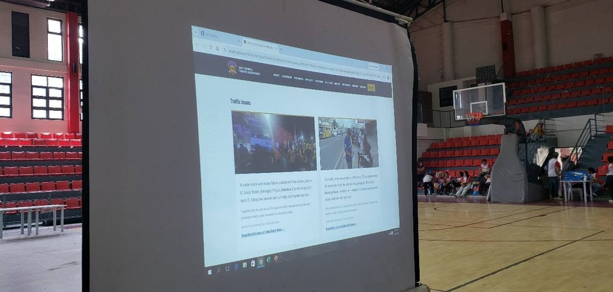
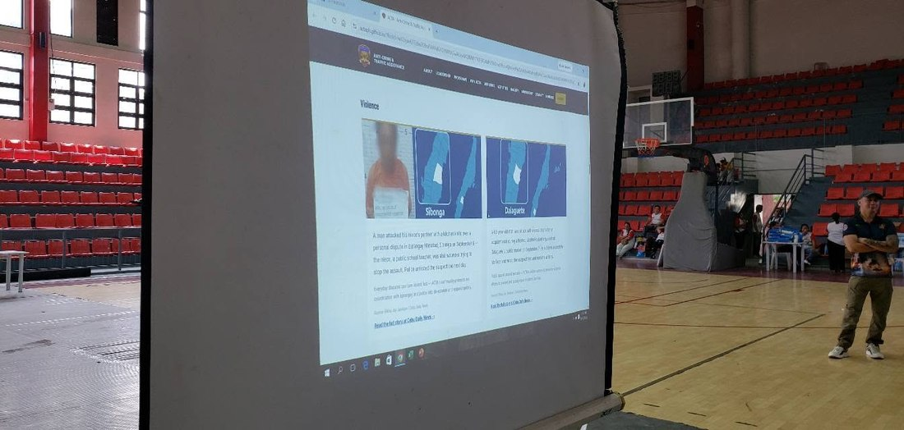
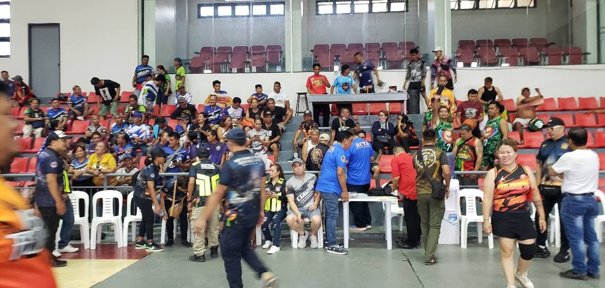